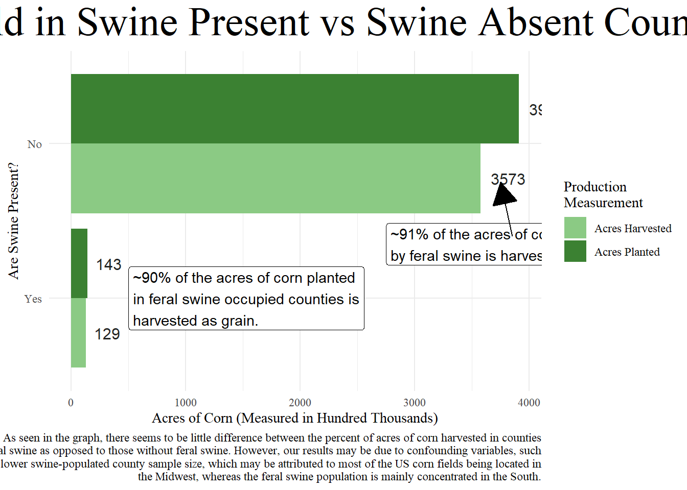

Rows: 8745 Columns: 21
── Column specification ────────────────────────────────────────────────────────
Delimiter: ","
chr (13): Program, Period, Geo Level, State, State ANSI, Ag District, County...
dbl (3): Year, Ag District Code, CV (%)
num (1): Value
lgl (4): Week Ending, Zip Code, Region, Watershed
ℹ Use `spec()` to retrieve the full column specification for this data.
ℹ Specify the column types or set `show_col_types = FALSE` to quiet this message.
Rows: 11410 Columns: 21
── Column specification ────────────────────────────────────────────────────────
Delimiter: ","
chr (15): Program, Period, Geo Level, State, State ANSI, Ag District, County...
dbl (2): Year, Ag District Code
lgl (4): Week Ending, Zip Code, Region, Watershed
ℹ Use `spec()` to retrieve the full column specification for this data.
ℹ Specify the column types or set `show_col_types = FALSE` to quiet this message.
Rows: 1930 Columns: 14
── Column specification ────────────────────────────────────────────────────────
Delimiter: ","
chr (6): NAME, STATE_NAME, STATE_FIPS, CNTY_FIPS, FIPS, SwinePres
dbl (7): FID, Join_Count, TARGET_FID, JOIN_FID, ObjectID, SQMI, Id
lgl (1): Cnty_Statu
ℹ Use `spec()` to retrieve the full column specification for this data.
ℹ Specify the column types or set `show_col_types = FALSE` to quiet this message.
Rows: 1217 Columns: 15
── Column specification ────────────────────────────────────────────────────────
Delimiter: ","
chr (5): NAME, STATE_NAME, STATE_FIPS, CNTY_FIPS, FIPS
dbl (9): FID, OBJECTID_1, Join_Count, TARGET_FID, ObjectID, SQMI, Id, Shape_...
lgl (1): Cnty_Statu
ℹ Use `spec()` to retrieve the full column specification for this data.
ℹ Specify the column types or set `show_col_types = FALSE` to quiet this message.
Rows: 1183 Columns: 22
── Column specification ────────────────────────────────────────────────────────
Delimiter: ","
chr (12): NAME, STATE_NAME, STATE_FIPS, CNTY_FIPS, FIPS, huc12, name_1, stat...
dbl (10): FID, Join_Count, TARGET_FID, ObjectID, SQMI, join_cou_1, target_f_...
ℹ Use `spec()` to retrieve the full column specification for this data.
ℹ Specify the column types or set `show_col_types = FALSE` to quiet this message.
Rows: 1158 Columns: 40
── Column specification ────────────────────────────────────────────────────────
Delimiter: ","
chr (15): STATEFP, COUNTYFP, GEOID, STATE, NAME, FY25Status, LSAD, COUNTYNS,...
dbl (17): FID, OBJECTID, ALAND, AWATER, Shape_Leng, Shape_Le_1, Shape_Area, ...
lgl (8): CLASSFP, MTFCC, CNECTAFP, NECTAFP, NCTADVFP, FUNCSTAT, INTPTLAT, I...
ℹ Use `spec()` to retrieve the full column specification for this data.
ℹ Specify the column types or set `show_col_types = FALSE` to quiet this message.
head(corn)
# A tibble: 6 × 21
Program Year Period `Week Ending` `Geo Level` State `State ANSI`
<chr> <dbl> <chr> <lgl> <chr> <chr> <chr>
1 SURVEY 2025 YEAR NA COUNTY ALABAMA 01
2 SURVEY 2025 YEAR NA COUNTY ALABAMA 01
3 SURVEY 2025 YEAR NA COUNTY ALABAMA 01
4 SURVEY 2025 YEAR NA COUNTY ALABAMA 01
5 SURVEY 2025 YEAR NA COUNTY ALABAMA 01
6 SURVEY 2025 YEAR NA COUNTY ALABAMA 01
# ℹ 14 more variables: `Ag District` <chr>, `Ag District Code` <dbl>,
# County <chr>, `County ANSI` <chr>, `Zip Code` <lgl>, Region <lgl>,
# watershed_code <chr>, Watershed <lgl>, Commodity <chr>, `Data Item` <chr>,
# Domain <chr>, `Domain Category` <chr>, Value <dbl>, `CV (%)` <dbl>
head(harvested)
# A tibble: 6 × 21
Program Year Period `Week Ending` `Geo Level` State `State ANSI`
<chr> <dbl> <chr> <lgl> <chr> <chr> <chr>
1 CENSUS 2022 YEAR NA COUNTY ALABAMA 01
2 CENSUS 2022 YEAR NA COUNTY ALABAMA 01
3 CENSUS 2022 YEAR NA COUNTY ALABAMA 01
4 CENSUS 2022 YEAR NA COUNTY ALABAMA 01
5 CENSUS 2022 YEAR NA COUNTY ALABAMA 01
6 CENSUS 2022 YEAR NA COUNTY ALABAMA 01
# ℹ 14 more variables: `Ag District` <chr>, `Ag District Code` <dbl>,
# County <chr>, `County ANSI` <chr>, `Zip Code` <lgl>, Region <lgl>,
# watershed_code <chr>, Watershed <lgl>, Commodity <chr>, `Data Item` <chr>,
# Domain <chr>, `Domain Category` <chr>, Value <chr>, `CV (%)` <chr>
head(swine_20)
# A tibble: 6 × 14
FID Join_Count TARGET_FID JOIN_FID ObjectID NAME STATE_NAME STATE_FIPS
<dbl> <dbl> <dbl> <dbl> <dbl> <chr> <chr> <chr>
1 0 1 1 407 1 Monroe Florida 12
2 1 1 2 22 2 Kalawao Hawaii 15
3 2 1 3 27 3 Kauai Hawaii 15
4 3 1 3 28 3 Kauai Hawaii 15
5 4 1 3 29 3 Kauai Hawaii 15
6 5 1 4 23 4 Honolulu Hawaii 15
# ℹ 6 more variables: CNTY_FIPS <chr>, FIPS <chr>, SQMI <dbl>,
# Cnty_Statu <lgl>, Id <dbl>, SwinePres <chr>
# Cleaning the data sets into something we can use for better data viz and analysisclean_planted <- corn %>%clean_names() %>%mutate(ansi =str_c(state_ansi, county_ansi)) %>%select(year,state, county,commodity, data_item, value, year, ansi) %>%pivot_wider(names_from = data_item, values_from = value) %>%clean_names()# There was a problem with the harvestedclean_harvested <- harvested %>%clean_names() %>%mutate(ansi =str_c(state_ansi, county_ansi)) %>%select(state, county, commodity, data_item, value, year, ansi) %>%filter(value !="(D)") %>%mutate(value =str_remove_all(value, ",")) %>%mutate(value =as.numeric(value)) %>%distinct(state, county, year, .keep_all =TRUE) %>%pivot_wider(names_from = data_item, values_from = value) %>%clean_names()
# Joining the two data setsplanted_vs_harvested <- clean_planted %>%left_join(clean_harvested) %>%filter(county !="OTHER COUNTIES")
Joining with `by = join_by(year, state, county, commodity, ansi)`
year state county commodity
Min. :2020 Length:8561 Length:8561 Length:8561
1st Qu.:2021 Class :character Class :character Class :character
Median :2022 Mode :character Mode :character Mode :character
Mean :2022
3rd Qu.:2024
Max. :2025
ansi corn_acres_planted corn_grain_acres_harvested
Length:8561 Min. : 100 Min. : 9
Class :character 1st Qu.: 8900 1st Qu.: 7225
Mode :character Median : 31200 Median : 26900
Mean : 52920 Mean : 49031
3rd Qu.: 79300 3rd Qu.: 73799
Max. :376000 Max. :375000
NA's :2
# A tibble: 6 × 5
name state_name fips swine_pres year
<chr> <chr> <chr> <chr> <dbl>
1 Monroe Florida 12087 Yes 2020
2 Kalawao Hawaii 15005 Yes 2020
3 Kauai Hawaii 15007 Yes 2020
4 Honolulu Hawaii 15003 Yes 2020
5 Maui Hawaii 15009 Yes 2020
6 Hawaii Hawaii 15001 Yes 2020
head(clean_swine_21)
# A tibble: 6 × 5
name state_name fips swine_pres year
<chr> <chr> <chr> <chr> <dbl>
1 Franklin Alabama 01059 Yes 2021
2 Lamar Alabama 01075 Yes 2021
3 Marion Alabama 01093 Yes 2021
4 Greene Alabama 01063 Yes 2021
5 Sumter Alabama 01119 Yes 2021
6 Pickens Alabama 01107 Yes 2021
head(clean_swine_22)
# A tibble: 6 × 5
name state_name fips swine_pres year
<chr> <chr> <chr> <chr> <dbl>
1 Monroe Florida 12087 Yes 2022
2 Kalawao Hawaii 15005 Yes 2022
3 Kauai Hawaii 15007 Yes 2022
4 Honolulu Hawaii 15003 Yes 2022
5 Maui Hawaii 15009 Yes 2022
6 Hawaii Hawaii 15001 Yes 2022
head(clean_swine_23)
# A tibble: 6 × 5
name state_name fips swine_pres year
<chr> <chr> <chr> <chr> <dbl>
1 Monroe Florida 12087 Yes 2023
2 Kalawao Hawaii 15005 Yes 2023
3 Kauai Hawaii 15007 Yes 2023
4 Honolulu Hawaii 15003 Yes 2023
5 Maui Hawaii 15009 Yes 2023
6 Hawaii Hawaii 15001 Yes 2023
head(clean_swine_24)
# A tibble: 6 × 5
name state_name fips swine_pres year
<chr> <chr> <chr> <chr> <dbl>
1 Monroe Florida 12087 Yes 2024
2 Del Norte California 06015 Yes 2024
3 Humboldt California 06023 Yes 2024
4 Trinity California 06105 Yes 2024
5 Mendocino California 06045 Yes 2024
6 Lake California 06033 Yes 2024
# A tibble: 6 × 5
name state_name fips swine_pres year
<chr> <chr> <chr> <chr> <dbl>
1 Monroe Florida 12087 Yes 2020
2 Kalawao Hawaii 15005 Yes 2020
3 Kauai Hawaii 15007 Yes 2020
4 Honolulu Hawaii 15003 Yes 2020
5 Maui Hawaii 15009 Yes 2020
6 Hawaii Hawaii 15001 Yes 2020
year state county swine_pres
Min. :2020 Length:17118 Length:17118 Yes: 4556
1st Qu.:2021 Class :character Class :character No :12562
Median :2022 Mode :character Mode :character
Mean :2022
3rd Qu.:2024
Max. :2025
harvest_or_planted acres
Acres Harvested:8559 Min. :0.000
Acres Planted :8559 1st Qu.:0.000
Median :0.000
Mean :0.453
3rd Qu.:1.000
Max. :4.000
# Figuring out some information for the additional information in our chart.# Finding out the values of each of our barstotal_crop <- crop_and_swine %>%group_by(swine_pres, harvest_or_planted) %>%summarise(sum(acres)) %>%clean_names()
`summarise()` has grouped output by 'swine_pres'. You can override using the
`.groups` argument.
Making the visualization
# Making bar chartswine_text <-"~90% of the acres of corn planted in feral swine occupied counties is harvested as grain."%>%str_wrap(width =40)no_swine_text <-"~91% of the acres of corn planted in counties not occupied by feral swine is harvested as grain."%>%str_wrap(width =60)summary_text <-"As seen in the graph, there seems to be little difference between the percent of acres of corn harvested in counties with feral swine as opposed to those without feral swine. However, our results may be due to confounding variables, such as our lower swine-populated county sample size, which may be attributed to most of the US corn fields being located in the Midwest, whereas the feral swine population is mainly concentrated in the South."%>%str_wrap(width =120)ggplot(total_crop, aes(x = swine_pres, y = sum_acres, fill = harvest_or_planted))+geom_col(aes(x = swine_pres, y = sum_acres, fill = harvest_or_planted), position ="dodge")+coord_flip()+theme_minimal()+labs(y ="Acres of Corn (Measured in Hundred Thousands)", x ="Are Swine Present?", fill ="Production \nMeasurement", title ="Corn Yield in Swine Present vs Swine Absent Counties", caption = summary_text)+scale_fill_manual(values =c("Acres Planted"="#3b8132", "Acres Harvested"="#8bca84"))+geom_text(aes(label = sum_acres), color ="#242525", position =position_dodge(width = .9), size =4, hjust =-0.3)+annotate(geom ="label",x ="Yes", y =500,label = swine_text,hjust ="left") +annotate(geom ="label",x =1.35,y =2750,label = no_swine_text,hjust ="left")+annotate(geom ="segment",x =1.40,y =3850,xend =1.75,yend =3750,arrow =arrow(type ="closed"))+theme(plot.title =element_text(size =30, hjust =0.5), text=element_text(family="serif"))

Description of Visualization
The purpose of this graph was to take a look at the potential damage caused by feral swine on the United States agricultural sector. Most literature that highlights the damage or threat that the invasive feral swine population poses mainly focuses on the damage caused to crops and livestock. The biggest United States crop is corn, so if large amounts of damage to corn could be attributed to feral swine, then we could potentially assume that feral swine have largely affected the agricultural and, subsequently, the economic sectors of the United States.
This graph shows on its x-axis, which is vertical, the different categories of counties: those that have feral swine present and those that do not. The y-axis shows the number of acres of land (in hundreds of thousands of acres) that are used for farming corn for each of those county types. The colors are used to designate which metric we are looking at: acres harvested vs. acres planted of corn. We can see on the graph that there seems to be way more corn planted and harvested in counties that do not have a reported feral swine population as compared to their swine-populated counterparts. Additionally, the graph shows that there isn’t a clear difference between the proportions of corn that were successfully harvested for grain. This could suggest that there are confounding variables (perhaps there was more corn harvested in one area than another but just wasn’t quantified in the “grain” category) or that the feral swine might not cause much discernible damage to corn crops. What is also notable is that we don’t have comparable-sized groups. This might be because most of the US’ corn is grown in the Midwest, whereas the feral swine population is centered around the South.
Moving forward, we should focus on crops located in the territory of feral swine territory to get a better representation of the damage they are causing. Mapping the locations of crops and swine might also be helpful to this end so we can better see the overlap in crops and the swine territory. We also might want to analyze other metrics to assess damage caused by feral swine (i.e., property damage). We might also like to analyze the trends over time. Have we gotten better at reducing the damage caused by feral swine on crops, and how has that changed over time?
AI statement
ChatGPT was used once to debug a problem with the way I was formatting the annotate statements in the graph.